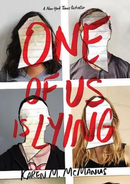

Novels
One of Us is Lying.
At Bayview High, Bronwyn, Simon, Nate, Cooper, and Addy attend detention with teacher Mr. Avery after he found mobile
phones in each of their school bags, against his strict no-phone policy. The students were thought to have been framed
because all of the students claim that the phones are not theirs and that someone has planted them there to get them in
trouble. They hear a collision and some loud arguments in the school parking lot, and Mr. Avery leaves to investigate.
Simon—creator of 'About That', an app that reveals secrets nobody knows about you in which the personal lives of
students at Bayview High are posted for the rest of the school to see—begins a speech about the other four students and
how he, through his app, is the omniscient narrator. He drinks tap-water from a plastic cup and suffers a fatal allergic
reaction due to his peanut allergy. The others attempt to help, but it is too late and Simon dies in the hospital.

The Reapperence of Rachel Price
Lights. Camera. Lies.
18-year-old Bel has lived her whole life in the shadow of her mom’s mysterious disappearance. Sixteen years ago, Rachel
Price vanished and young Bel was the only witness, but she has no memory of it. Rachel is gone, long presumed dead, and
Bel wishes everyone would just move on.
But the case is dragged up from the past when the Price family agree to a true crime documentary. Bel can’t wait for
filming to end, for life to go back to normal. And then the impossible happens. Rachel Price reappears, and life will
never be normal again.